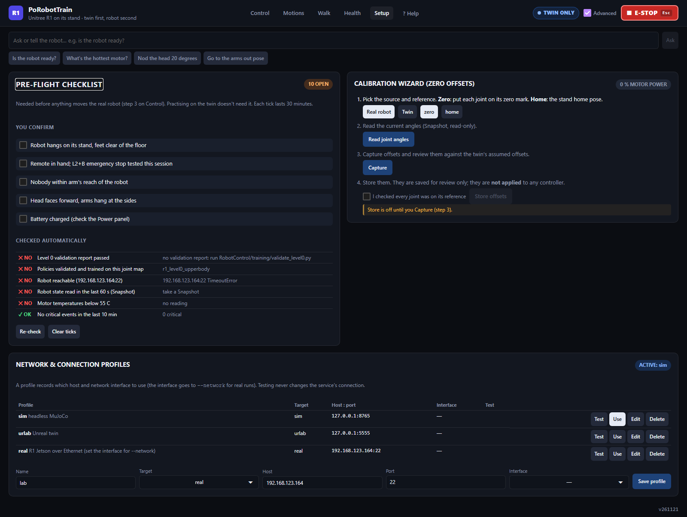
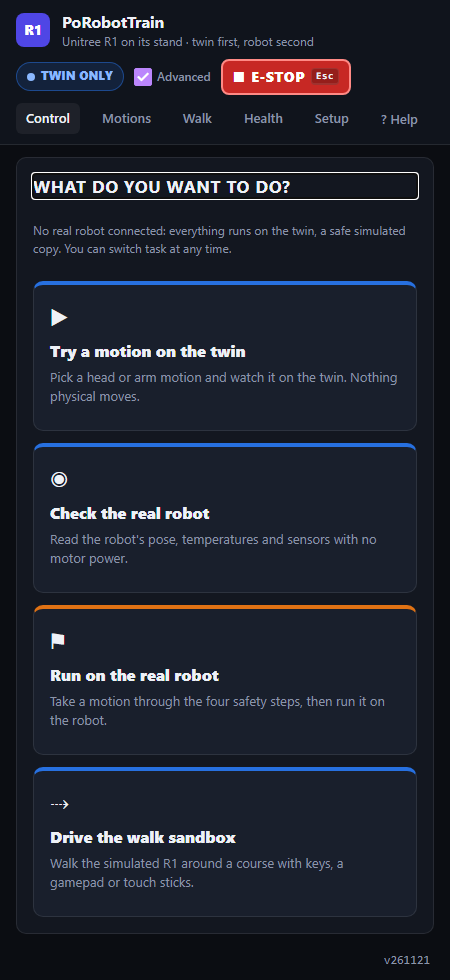
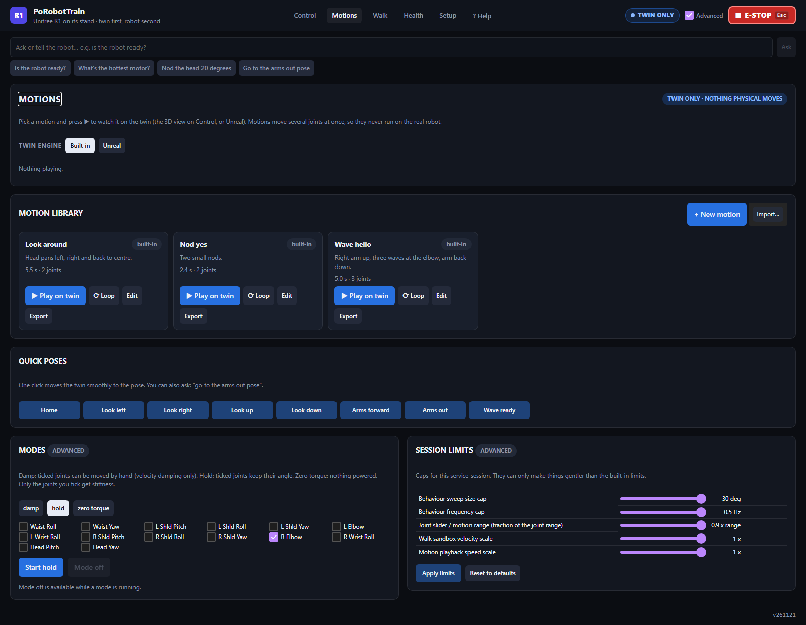
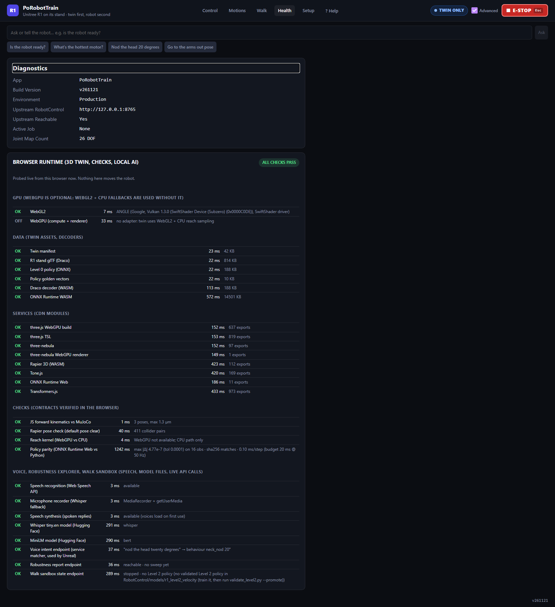
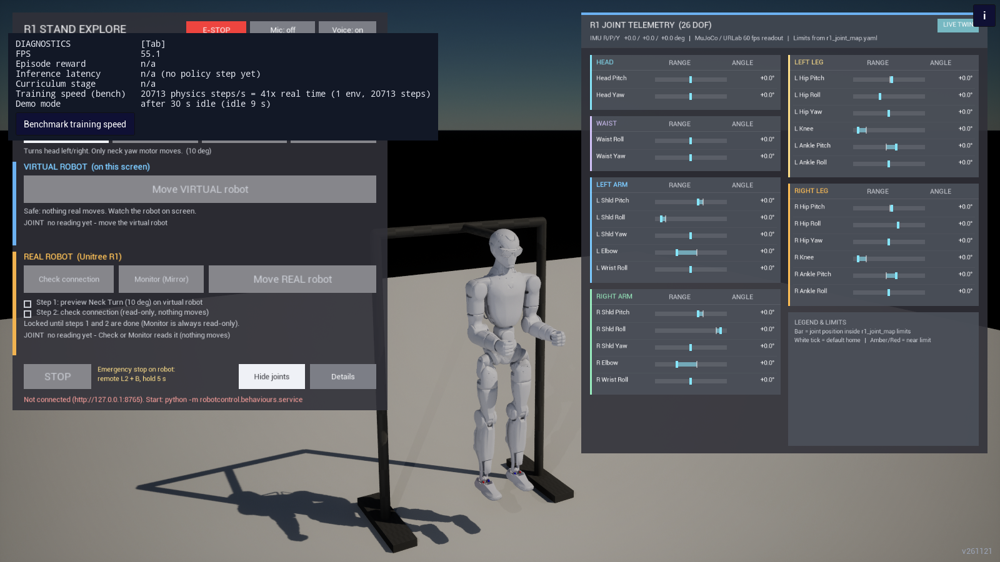
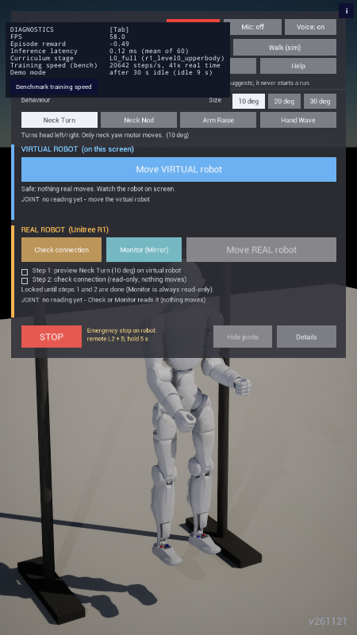

Blazor control UI: trimmed Release publish on port 5080 against the behaviour service on 8765 (--no-mirror), no robot connected; captured with headless Chromium. Unreal: R1Twin -game with -ShowcaseCapture -ShowcaseTouch -ShowcaseBench. The five HUD anchors of the Unreal panel are unchanged.
Before
The previous state is in console_report.html (raw HTML buttons and inputs, the version stamp in the header, SkiaSharp heatmap) and unreal_console_report.html (overlay without a benchmark button).
Before, 1600×900: stamp in the header row.Before, 450×800.
After

Setup (Advanced on): every control is a Radzen component; the profile form validates inline (FluentValidation, registered by type). Stamp bottom-right, after the content.

450×800: no sideways scroll; the stamp follows the content.

Motions: Radzen buttons keep the app's chip / button look (theme in a low CSS layer), import is a RadzenFileInput.

Diagnostics: the API snapshot now reads back (it showed blank values and "Upstream Reachable: No" before); OFF rows are grey and do not fail the page.

Unreal 16:9: Tab overlay with the new "Benchmark training speed" button (1 s of MuJoCo steps on a copy of the scene: ~20,000 steps/s, ~40x real time).

Unreal 9:16 with the Level 0 policy on (config override): reward, inference latency, curriculum stage and the benchmark fit the overlay.